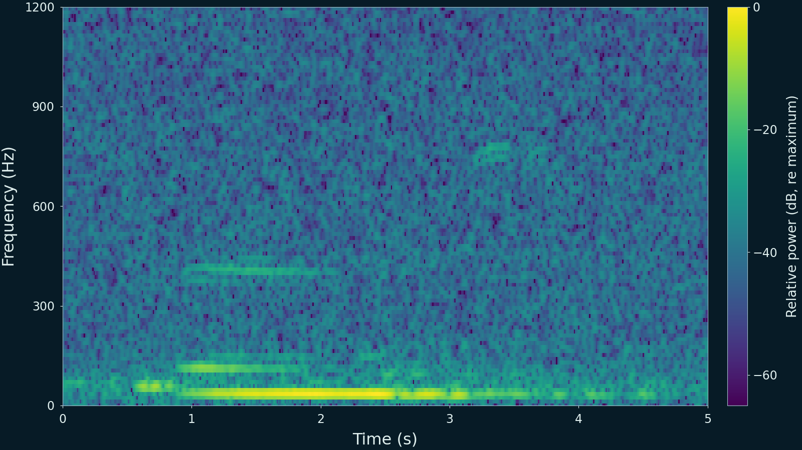
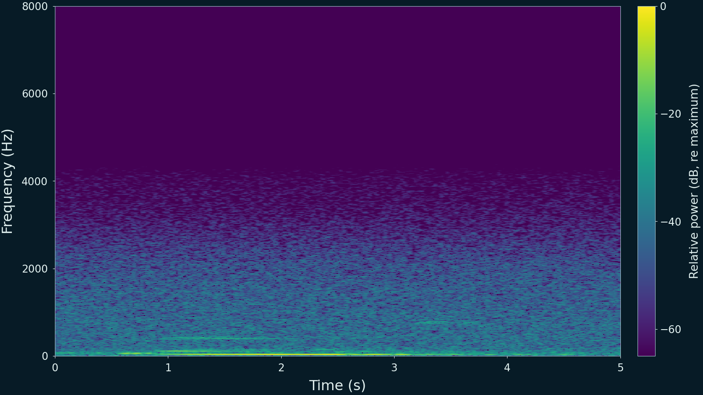
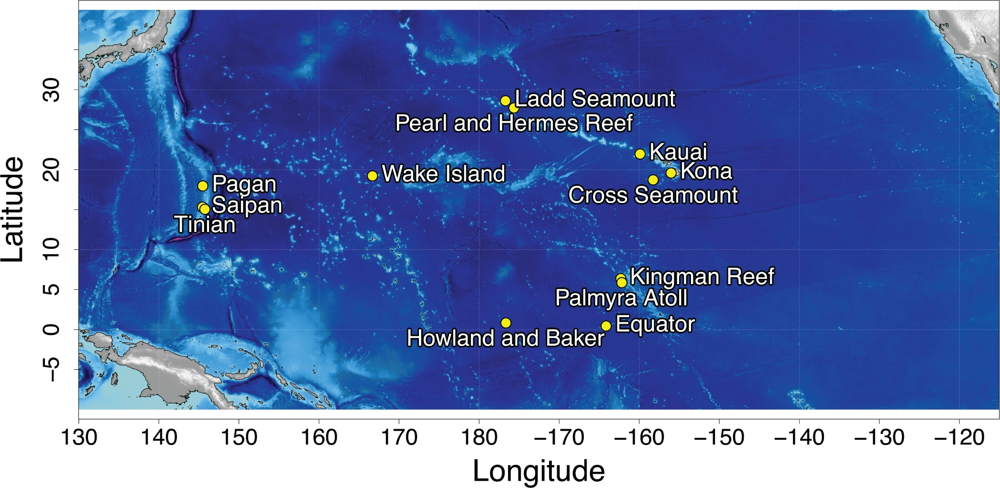
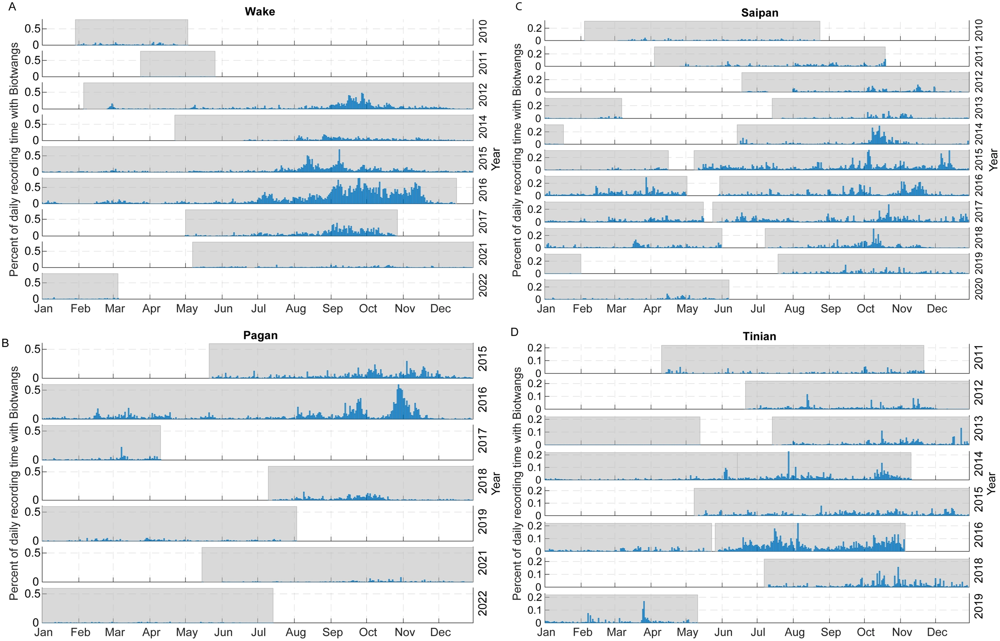

AI × 生態研究 · Biotwang 聲音辨識
海裡這一聲，是誰發出的？
從鯨的聲音，到跨海域、跨年份的錄音線索。
閱讀完整文字
海裡這一聲，是誰發出的？
布氏鯨生活在溫暖的海域。牠發出的 Biotwang，聽起來有一段像金屬顫動的聲音。先聽這段原音。
這是 Google Research 公開的 5 秒範例，按原速播放。照片由 NOAA 團隊在 2010 年拍攝；照片與這段聲音不是同一次觀察。
看見與聽見，要對上同一次遭遇
目視觀察先確認附近看見的是布氏鯨；同期的水下錄音則確認出現 Biotwang。把兩項紀錄放在一起，才能將這種聲音與布氏鯨連起來。
10 次確認物種的遭遇中，9 次錄到 Biotwang。反覆的視聽配對支持發聲物種的判定；這個比例不是 AI 的準確率，也沒有指認照片中某一隻鯨正在發聲。
聲音也有可以辨認的形狀
再聽一次相同的片段。游標向右走，表示時間經過；線條越高，聲音頻率越高。較亮的地方，表示這段錄音在該頻率的能量較強。
這張頻譜由原音計算，先放大 0–1,200 Hz 的低頻區域。下方保留 0–8,000 Hz 總覽。顏色是相對功率，不能當成海中的實際音量。
從人確認過的聲音學起
研究者先標出有、沒有 Biotwang 的錄音，讓模型學習頻譜中的線索。初版模型找出的高分候選，也送回人工確認真偽，補進後續訓練。
研究另抽取隨機片段檢查，減少只看模型偏好片段的問題。這裡解說原研究的方法，沒有在這個頁面重新執行聲音辨識。
長錄音，分成短片段來搜尋
每段 5 秒錄音都有一個分數；分數越高，表示模型判斷越像 Biotwang。這組教學例子的最高分是 0.92，便用它代表整個 75 秒區段。它高於示意門檻 0.70，因此這個區段記為有聲。
分數與門檻都是教學設定，未重新推論，也不對應前面的原音。0.92 不是 92% 準確率。原研究為四個主要分析站分別選擇門檻，低分或零星紀錄另由人工抽查。
把各地留下的聲音放回地圖
研究搜尋北太平洋 13 個監測站的長期錄音。後面的時間圖聚焦在 Wake、Pagan、Tinian、Saipan 這 4 個較常錄到 Biotwang 的站點。
原圖標示的是錄音站的位置，不是鯨魚的位置。它也沒有告訴我們某一隻鯨從哪裡游到哪裡。
有些時候，更常錄到這一聲
作者將每天實際取得的錄音分成 75 秒區段，算出有多少比例被判定含有 Biotwang。較明顯的高峰多在 8–11 月，部分站點也有較小的春季高峰。
這是作者的 Figure 3，各站與各年仍有差異。一個區段被記為有聲，不代表整段 75 秒都在叫。圖上的百分比不是鯨魚數量；沒有錄到，也不等於沒有鯨魚。
知道何時聽見，還不等於知道有幾隻
確認了聲音來源，再讓 AI 搜尋大量錄音，研究者就能追問：哪些地點、哪些時段會錄到這種聲音？不同年份有沒有改變？
這些紀錄提供聲音活動的線索。要估計個體數量、確認移動路線，仍需要其他觀測。
原音、研究圖與來源
這裡保留完整來源圖與錄音。可對照動畫中的局部畫面，閱讀來源、圖軸及使用說明。開啟 5 秒原音。
布氏鯨的真實照片
NOAA Fisheries／Adam Ü，2010 年馬里亞納調查，Permit #14097。NOAA Photo Library anim2619，CC BY 2.0。這張照片不是這段音檔的同期影像，也不是 2018 年視聽配對遭遇的現場照片。

同一段原音的低頻放大
由 5 秒原音計算的 0–1,200 Hz 頻譜。橫軸是秒，縱軸是 Hz，顏色是相對功率（dB）。這是供人閱讀的聲音展示，沒有重製模型的 mel／PCEN 輸入，也不是分類分數。

同一段原音的頻率總覽
0–8,000 Hz，使用與低頻放大相同的相對功率色階。原音的取樣率為 24,000 Hz。只改變觀看範圍，沒有替播放音檔濾波、加速或延長。

Figure 1：北太平洋錄音站
Allen 等（2024），CC BY 4.0。完整原圖標示研究搜尋的 13 個 HARP 站。站點不代表鯨的位置，圖中沒有個體移動路線。

Figure 3：每天的錄音陽性比例
Allen 等（2024），CC BY 4.0。四個分圖 A–D 依序為 Wake、Pagan、Saipan、Tinian；陰影標出有錄音的時段。75 秒區段達到該站門檻即記為陽性，再以當天實際錄音彙整比例；不是鯨魚數或真正持續發聲的秒數。